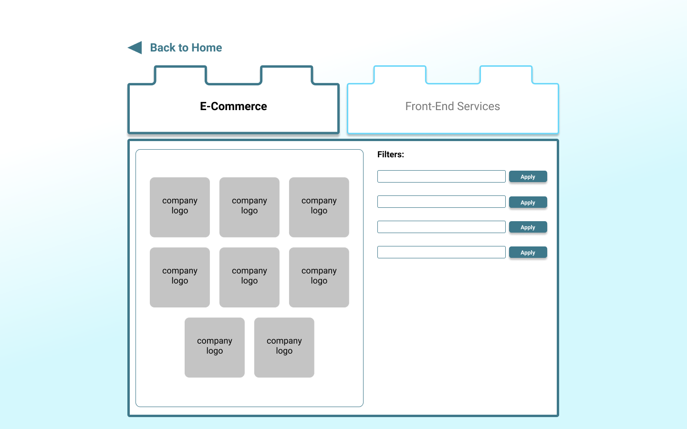
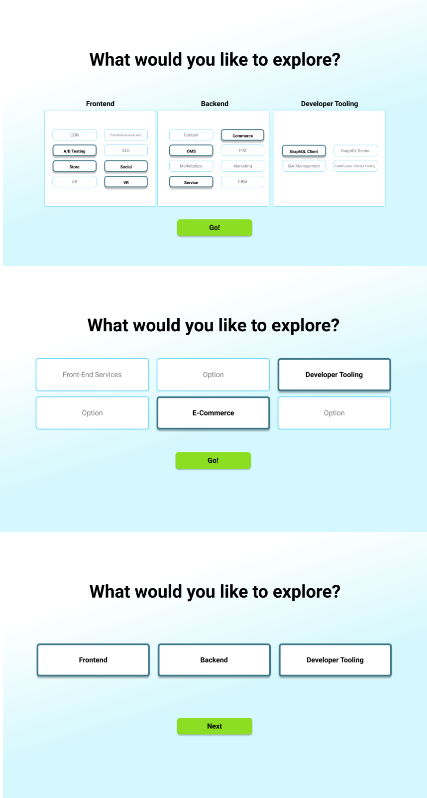
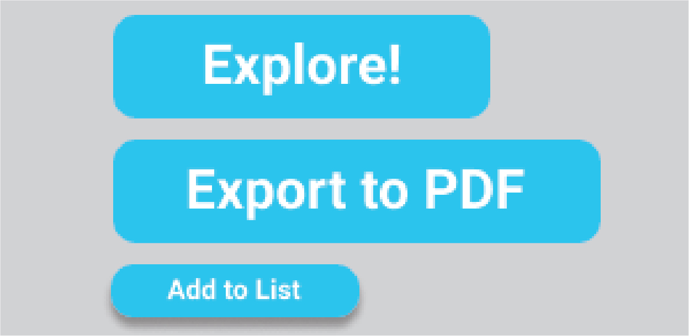
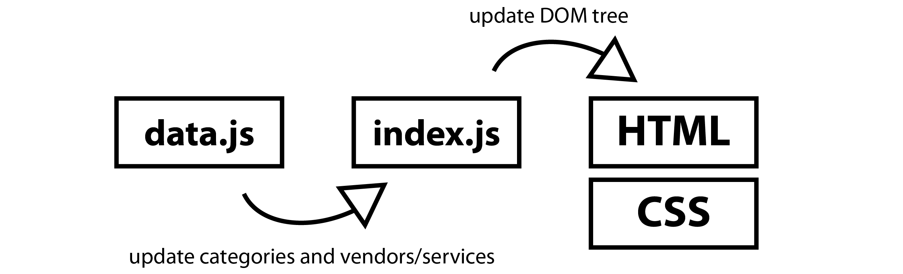
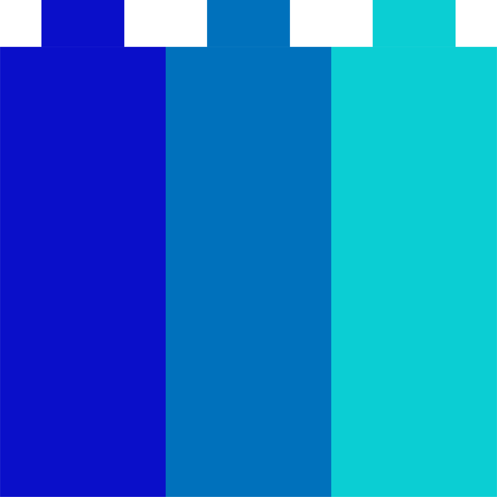
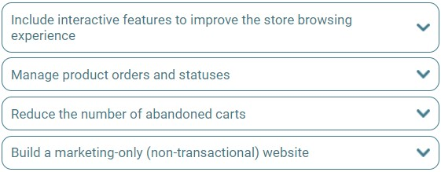
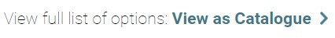

Individual: Usability tests, prototyping, UI design, frontend development
Method
For my internship project at commercetools, I designed and developed moderncommercelandscape.com, a website that helps technical and non-technical users navigate the headless e-commerce landscape.
How can I help technical and non-technical businesses explore the modern e-commerce landscape?
Context
In headless e-commerce, businesses combine multiple services to power their e-commerce platform. Unlike the traditional top-down approach where pushing changes requires a full update to the entire service, businesses that take advantage of headless e-commerce can choose to update specific parts of their service, resulting in quicker software updates. However, searching for and integrating the right services to match the business need can be difficult due to there being numerous vendors that provide similar features. For my internship project, I designed and developed a website that helps people make sense of headless e-commerce and facilitate further exploration.
Prototype v1
In the initial meeting with my manager, I codesigned a rough prototype for how the website should look. In this 5 hour meeting, we established a preliminary list of features we need to support the end users and discussed potential designs.
List of desirable features:
Stray from technical jargon as much as possible
Consider both technically fluent and novice users
Visually represent how headless commerce is "horizontal," not vertical (i.e., the traditional approach is top-down, coupling frontend and backend vs. headless approach is decoupled)
Facilitate sharing - save to PDF, shareable link
Ability to filter options
With this initial list of design requirements, I brainstormed a couple concepts that focus on being visually interactive and easy to consume.

The initial design for exploring categories. Under each "lego," the user can find all the relevant services for that category, with the ability to filter as needed.

Discussion on potential landing pages - fewer options can be less overwhelming for novice users, while technically fluent users might rather see a full list of browsable options. Ultimately, we decided to move on with the second option.
Feedback Sessions
With this initial prototype, I held two usability tests with my design peers and received the following feedback:
Selecting categories was difficult because they didn't understand what many of the categories meant.
UI suggestions to improve the look of the website.
It was difficult to tell when an element (e.g., category tab) was selected.
Despite the bolded text and dark border, the difference between the selected and unselected tab was too minimal to be easily understandable
Prototype v2
Based on the feedback, I designed the second iteration of the website, focusing on the following changes:
Adding beginner-friendly prompts and definitions to better support beginners in selecting categories.
Making selected elements more distinct through colors and hover/click feedback.
Keeping calls to action (e.g., buttons) consistent so that the user knows where to click to go to the next page.

Keeping action items consistent helps guide the user to the next screen.
Implementation
Considering that the website is static, I implemented the website using Google App Engine using HTML, CSS, and JavaScript.
To facilitate making changes, I load data structures (e.g., list of vendors for a category) into index.js from data.js, and use that to update the website HTML.

Presentation
I presented this second iteration of Modern Commerce Landscape to commercetools for a final round of feedback before I hand it off to my manager. The responses were largely positive and I received a few pieces of feedback:
Color coding for Frontend, Backend, and Developer Tooling
Provide a descriptive README with instructions on how to edit the website data
Final Website
The final website features beginner-friendly prompts, a catalogue view for experienced users, color coded categories, and relevant links for each vendor. When the user finalizes their selections, they can generate a PDF or a shareable URL.

Website logo emphasizes the horizontal nature of headless e-commerce.

Dropdown prompts use non-technical language to minimize specialized vocabulary and accommodate all users.

For technical users (e.g., developers), the catalogue view shows all of the explorable options.
Emphasis with the color disparity and underline highlights the selected tab further. The tab also highlights when hovered over.
By making the sharing of contact information optional, I allow all visitors to enjoy the full features while ensuring that those who share are willingly looking for further contact.
The final screen with summaries for the vendors selected can be shared via saving to a PDF or generating a shareable link.
Results
After I finished deploying the final version of the website, I wrote up a README.md that explains how to make changes to data.js, which would update information for categories and vendors that show up on the website.
My project was met with positive feedback from my manager and the company as a useful tool for learning about the modern e-commerce landscape.
Reflection
What I learned:
The fast pace of a product-focused internship meant that I had to adapt my user-centered design method to have time to program and deploy.
Incorporating user testing early in the design process helps identify missing points early and saves time in the long run.
Importance of being able to accommodate sudden changes and redesign/program accordingly.
Communication - I learned that communicating that a suggested deadline is unfeasible is important to not overwork myself.
If I did this again, I would...
Prioritize user testing early in the process by making quick, low-fidelity prototypes.
Consider setting up a backend for easier data manipulation, rather than editing the lengthy data.js.
Reference similar websites for design inspirations.